SPDIF 应用详细设计说明
术语和缩写词
解释 |
缩写和术语 |
|---|---|
SPDIF |
SONY、PHILIPS数字音频接口 |
HDMI |
高清晰多媒体接口 |
HDMI ARC |
HDMI音频回传通道 |
HDMI-CEC |
HDMI消费电子控制 |
HDMI-DDC |
HDMI Display Data Channel |
总体设计
需求概述
SPDIF应用主要实现的功能包括：
实现光纤、同轴、HDMI ARC 等介质传输的SPDIF信号播放;
提供加/减音量、切换输入源操作;
总体架构设计
本应用主要由以下五个模块组成，其中驱动层为HDMI CEC模块驱动和HDMI DCC驱动，中间层为SPDIF模块管理单元和SPDIF解码单元，应用层的主要实现SPDIF管理、HDMI控制、消息处理。
模块名称 |
对应文件 |
|---|---|
SPDIF 应用管理 |
spdif.c |
SPDIF模块管理 |
spdif_file.c |
SPDIF解码控制 |
spdif_player.c |
HDMI CEC驱动模块 |
hdmi_cec_drv.c |
HDMI DDC驱动 |
hdmi_ddc.c |
SPDIF应用相关模块描述
SPDIF应用
主要实现SPDIF的打开、关闭；HDMI CEC/CDC 控制和按键消息处理的实现。
SPDIF模块管理
主要实现SPDIF硬件配置 及 SPDIF解码 的联动控制，为SPDIF应用提供接口。
SPDIF 音频解码流控制
主要实现spdif 数据解码流的处理。
HDMI CEC驱动模块
主要实现 CEC总线通讯，与HDMI ARC 主机（电视）进行控制指令的通讯。
HDMI DCC驱动
主要通过IIC 读取HDMI电视节点分配的 HDMI物理地址。
模块关联图及应用层流程框图


SPDIF应用相关API
SPDIF模块管理API
spdif_init
初始化spdif 原型：
void *spdif_init(void)
参数：无 示例：
void *spdif_hd = spdif_init();
spdif_release
释放掉spdif_init 申请的内存 原型：
void spdif_release(void *_hdl);
参数：
参数名称 |
说明 |
|
|---|---|---|
*_hdl |
spdif_file句柄 |
|
示例： |
void *spdif_hd = spdif_init();
//……
spdif_release(spdif_hd);
spdif_start
打开spdif，此时spdif 数据中断开始有数据输入 原型：
int spdif_start(void)
参数：无 示例：
int ret = spdif_start();
if(ret){
// spdif_start err
}
spdif_stop
关闭spdif，停止spdif 数据中断数据输入 原型：
int spdif_stop(void)
参数：无 示例：
int ret = spdif_stop();
if(ret){
// spdif_stop err
}
spdif_io_loop_switch
循环切换配置文件里配置的输入IO 原型：
void spdif_io_loop_switch(void);
参数：无 示例：
spdif_io_loop_switch();
audio_spdif_file_get_cfg
获取SPDIF配置文件配置 原型：
struct spdif_file_cfg *audio_spdif_file_get_cfg(void);
参数：无 示例：
struct spdif_file_cfg *p_spdif_cfg = audio_spdif_file_get_cfg();
SPDIF 音频解码流API
打开spdif 数据流
spdif_player_open
原型：
int spdif_player_open(void)
参数：无 示例：
int ret = spdif_player_open();
if(ret){
//spdif_player_open err
}
spdif_player_runing
SPDIF数据流是否在运行 原型：
bool spdif_player_runing()
参数：无 示例：
if(spdif_player_runing()){
//数据流正在运行
}
spdif_player_close
原型：
void spdif_player_close()
参数：无 示例：
if(spdif_player_runing()){
spdif_player_close();
}
HDMI CEC驱动API
hdmi_cec_init
HDMI-CEC 初始化 原型:
void hdmi_cec_init(u8 cec_port)
参数：
参数名称 |
说明 |
|
|---|---|---|
cec_port |
CEC通讯 IO |
|
示例： |
hdmi_cec_init(IO_PORTC_03);
hdmi_cec_close
HDMI-CEC 关闭，与hdmi_cec_init配对使用 原型：
void hdmi_cec_close(void)
参数：无
示例
hdmi_cec_close();
hdmi_cec_vol_up
发送音量加CEC命令 原型：
int hdmi_cec_vol_up()
参数：无 示例：
hdmi_cec_vol_up();
hdmi_cec_vol_down
发送音量减CEC命令 原型：
int hdmi_cec_vol_down()
参数：无 示例：
hdmi_cec_vol_down();
HDMI DCC驱动AP
hdmi_ddc_get_cec_physical_address
获取HDMI 节点分配的物理地址 原型:
u32 hdmi_ddc_get_cec_physical_address(void)
参数：无 示例：
u32 hdmi_phy_address = hdmi_ddc_get_cec_physical_address();